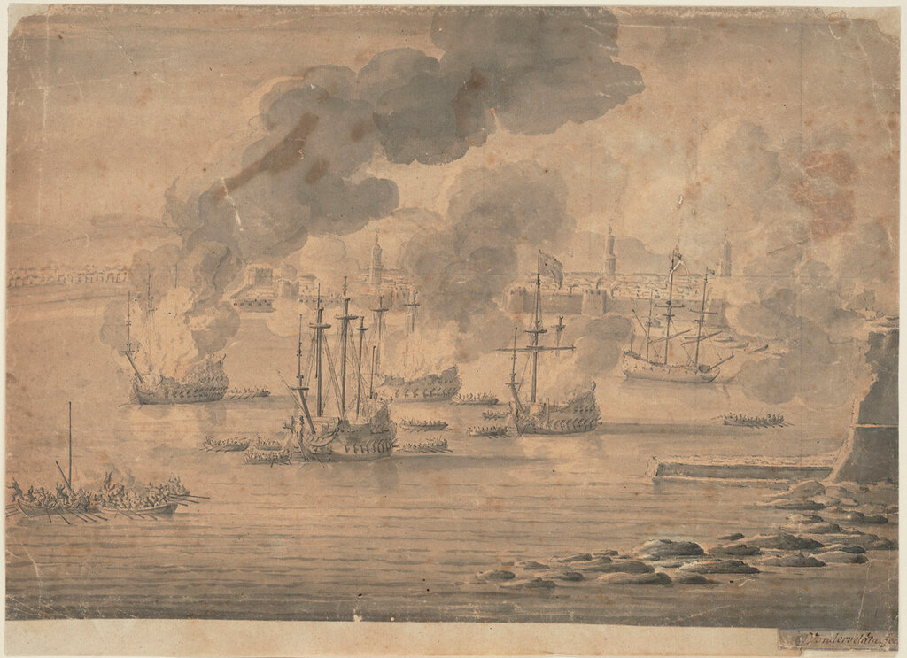
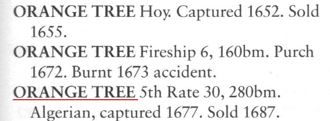
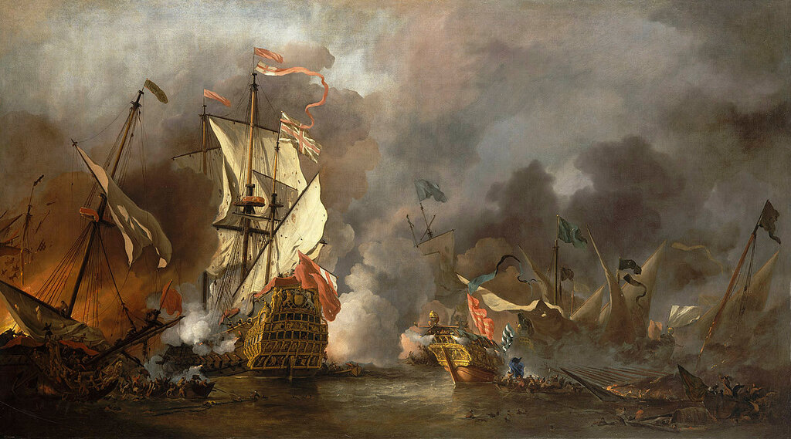
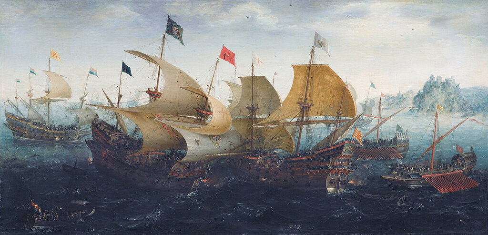

Разночинцы на морской службе
Разночинец... это что такое? Не дворянин...
Боборыкин. Василий Теркин
Первым офицером английского флота, произведенным в чин Master and Commander был некто Роберт Бест. Произошло это на Средиземном море 13 сентября 1676 года. Адмирал флота его величества короля Англии сэр John Narborough (иногда его имя пишут как Narbrough) проводил «контр-террористическую» операцию у берегов Северной Африки, в ходе которой было захвачено судно алжирских пиратов, получившее название "Orange-Tree".

Сэр Джон Нарборо сжигает четыре корабля у Триполи, 14-24 Января 1676 г. (National Maritime Museum, London, 1676)
Командовать кораблем и был поставлен Р.Бест с новым для английского флота титулом - Master and Commander.
Дату этого события, которая приведена в американской морской энциклопедии (A Naval Encyclopedia , Philadelphia, 1881), мне пришлось исправить. Американцы дают 1667 год, но всем известно пренебрежительное отношение этой нации к чужой истории. Основанием для исправления опечатки послужили сведения об экспедиции адмирала Нарборо в Средиземное море и анализ данных из списка всех кораблей английского флота под названием "Orange-Tree"

Фрагмент текста из книги J. J. Colledge, Ben Warlow, Ships of the Royal Navy . Chatham, 2006.

Виллем ван де Вельде Младший, 1878. Бой английского корабля с барбарийскими пиратами. National Maritime Museum, Greenwich, London
Предпосылки для введения градации капитанских званий на английском флоте были заложены задолго до указанной выше даты. Практически до правления Генриха VIII (1509 — 1547) все командные должности на кораблях английского военного флота занимали не моряки, а сухопутные командиры, назначаемые на эти посты не не постоянное время, а лишь на период, когда в них была необходимость. Дело изменилось во времена Генриха VIII, внешняя политика которого вовлекала страну в многочисленные войны. Военные корабли стали очень сложным объектом, чтобы ими можно было управлять без соответствующей подготовки. Мы подробно писали об этом в серии постов об англо-французских отношениях в XVI веке. К концу правления этого монарха появилась группа морских офицеров-профессионалов, правда, пока немногочисленная. Когда в 1544-1545 гг. проводилась мобилизация для очередной войны с Францией, тогдашний лорд-адмирал Джон Дадли столкнулся с проблемой острой нехватки командных кадров. И тогда, в нарушение традиций английской армии и флота, адмирал предложил назначать командирами на небольшие корабли лиц не дворянского происхождения, а представителей более низких слоев общества, "mean men". Однако, мы с уверенностью не можем утверждать, что такие назначения носили массовый характер. По крайней мере, нам не известны карьеры таких назначенцев, закончившиеся более или менее высоким постом в королевском флоте. Основным препятствием на пути такой реформы служил господствовавший тогда принцип, что никто из английских аристократов не должен был исполнять приказы человека, чье положение на социальной лестнице находится ниже. И хотя в документах о назначении на командные должности того и более позднего времени и встречаются ранги "petty captains", "sub-captains", а в 1618 г. и "under-captains" среди назначенных на командные должности лиц, эта практика не нашла своего развития. Попытки решить эту проблему в конце концов привели к появлению, наряду со званием Captain, его градации, ранга Commander. С середины XVI века , в правление Елизаветы, в руководстве флотом появились профессионалы морского дела, Хокинс, Фробишер, Дрейк и ряд других, которые прошли путь, начинавшийся с самых низших ступеней флотской иерархии, с командования небольшими кораблями, на которых, как и на кораблях торгового флота, должности командира и навигатора, штурмана, фактически совпадали. Тогда и появился впервые на командных должностях небольших военных кораблей командир в ранге Master. А в англо-голландской экспедиции по захвату Кадиса в 1596 году принял участие корабль Lion's Whelp с экипажем в 45 человек, которым командовал Captain and Master, хотя на других кораблях такого же размера, как следует из документов, имелись отдельно и Captain и Master.

Аарт ван Антум (1608). Сражение при Кадисе. Rijksmuseum, Амстердам.
В начальный период правления Стюартов английский флот переживал не лучшие времена, может быть в значительной степени оттого, что к командованию кораблями были вновь возвращены сухопутные генералы. Это вынудило вернуть на небольшие корабли должность Master, так как капитан уже ничего не смыслил в морском деле. Так, в списке кораблей, построенных по закону о «корабельных деньгах», за 1636 год даже на самых маленьких суденышках числился и капитан, и навигатор (Master). Ясно, что в те времена на командных должностях не могло быть людей в звании master and commander, да и звание master в качестве капитана встречается только лишь на транспортных судах торгового флота и относится к лицам, не связанным со службой на военном флоте, а следовательно, и не имеющим никаких перспектив в продвижении по военно-морской служебной лестнице.
Принципиальные изменения в этой картине произошли в 1642 году, когда в ходе разразившейся в Англии гражданской войны флот страны оказался под контролем сторонников парламента, «круглоголовых». Естественно, что к концу 1642 года с военных кораблей были удалены все капитаны-роялисты. На смену им пришло большое число капитанов с торгового флота. Среди них были те, кто впоследствии сделали карьеру в военно-морском флоте Англии, например, адмирал Джон Лоусон, вице-адмиралы Ричард Бэдли и Уильям Гудзон. На небольших кораблях с вооружением 12 и менее пушек и численностью экипажей менее 70 человек, наряду с командирами в ранге Commander и Master появились командиры с титулом Commander and Master (именно в таком порядке, вспомним наше замечание по этому поводу в предыдущем рассказе) и, что еще более важно, эти командиры получили перспективу повышения по службе до должности капитана и выше.
Чтобы не быть голословным, отдельным постом приводим список кораблей военно-морского флота Аглии по состоянию на 1643 год, из которого мы получаем полную картину, на какие корабли назначался капитан (captain), на какие - commander and master, какими судами командовал master, а какими – commander.
Рассказ же продолжу в следующий раз.